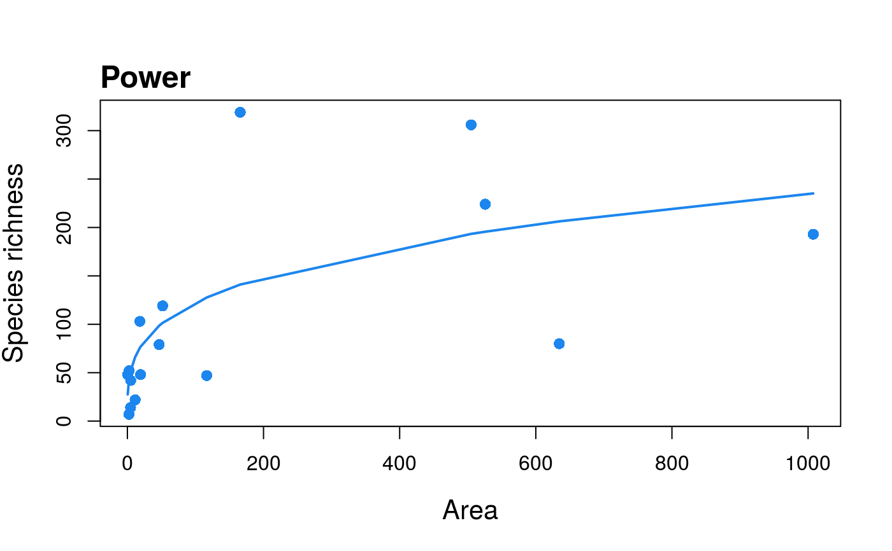
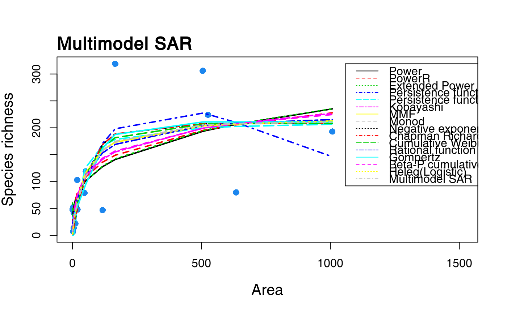

R/mmSAR2.R
sars-package.RdThis package provides functions to fit twenty models to species-area relationship (SAR) data (see Triantis et al. 2012), plot the model fits, and to construct a multimodel SAR curve using information criterion weights. A number of additional SAR functions are provided, e.g. to fit the log-log power model, the general dynamic model of island biogeography (GDM), and Coleman's Random Placement model.
Functions are provided to fit 20 individual SAR models. Nineteen are
fitted using non-linear regression, whilst a single model (the linear
model) is fitted using linear regression. Each model has its own function
(e.g. sar_power). A set of multiple model fits can be
combined into a fit collection (fit_collection). Plotting
functions (plot.sars) are provided that enable individual
model fits to be plotted on their own, or the fits of multiple models to be
overlayed on the same plot. Model fits are validated using a number of
checks, e.g. the normality and homogeneity of the model residuals can be
assessed.
A multimodel SAR curve can be constructed using the sar_multi
function. This fits up to twenty SAR models and constructs the multimodel
curve (with confidence intervals) using information criterion weights (see
summary.sars to calculate a table of models ranked by
information criterion weight). The plot.multi functions
enables the multimodel SAR curve to be plotted with or without the fits of
the individual models.
Other SAR related functions include: (i) lin_pow, which fits
the log-log power model and enables comparison of the model parameters with
those calculated using the non-linear power model, (ii) gdm,
which fits the general dynamic model of island biogeography (Whittaker et
al. 2008) using several different functions, and (iii)
coleman, which fits Coleman's (1981) random placement model
to a species-site abundance matrix.
Coleman, B. D. (1981). On random placement and species-area relations. Mathematical Biosciences, 54, 191-215.
Guilhaumon, F., Mouillot, D., & Gimenez, O. (2010). mmSAR: an R-package for multimodel species–area relationship inference. Ecography, 33, 420-424.
Matthews, T.J., Guilhaumon, F., Triantis, K.A, Borregaard, M.K., & Whittaker, R.J. (2015b) On the form of species–area relationships in habitat islands and true islands. Global Ecology & Biogeography. DOI: 10.1111/geb.12269.
Triantis, K.A., Guilhaumon, F. & Whittaker, R.J. (2012) The island species–area relationship: biology and statistics. Journal of Biogeography, 39, 215-231.
Whittaker, R.J., Triantis, K.A. & Ladle, R.J. (2008) A general dynamic theory of oceanic island biogeography. Journal of Biogeography, 35, 977-994.
#> #> Model: #> Power #> #> Call: #> S == c * A^z #> #> Did the model converge: TRUE #> #> Residuals: #> 0% 25% 50% 75% 100% #> -177.900 -22.125 14.700 38.525 126.300 #> #> Parameters: #> Estimate Std. Error t value Pr(>|t|) 2.5% 97.5% #> c 33.179155 19.241710 1.724335 0.106646 -5.304264 71.6626 #> z 0.283187 0.099363 2.850028 0.012849 0.084461 0.4819 #> #> R-squared: 0.49, Adjusted R-squared: 0.41 #> AIC: 141.62, AICc: 143.62, BIC: 143.94 #> Observed shape: convex up, Asymptote: FALSE #>plot(fit)#> #> Now attempting to fit the 20 SAR models: #> #> ── multi_sars ────────────────────────────────────────────── multi-model SAR ── #> → power : ✔ #> → powerR : ✔ #> → epm1 : ✔ #> → epm2 : ✔ #> → p1 : ✔ #> → p2 : ✔ #> → expo : ✔ #> → koba : ✔ #> → mmf : ✔ #> → monod : ✔ #> → negexpo : ✔ #> → chapman : Warning: could not compute parameters statistics #> → weibull3 : ✔ #> → asymp : ✔ #> → ratio : ✔ #> → gompertz : ✔ #> → weibull4 : ✔ #> → betap : ✔ #> → heleg : ✔ #> → linear : ✔ #> #> Model fitting completed - all models succesfully fitted. Now undertaking model validation checks. #> Additional models will be excluded if necessary:#> #> #>#> #> #>#> 15 remaining models used to construct the multi SAR: #> Power, PowerR, Extended Power model 2, Persistence function 1, Persistence function 2, Kobayashi, MMF, Monod, Negative exponential, Chapman Richards, Cumulative Weibull 3 par., Rational function, Gompertz, Beta-P cumulative, Heleg(Logistic) #> ────────────────────────────────────────────────────────────────────────────────summary(fit_multi)#> #> Sar_multi object summary: #> #> 15 models successfully fitted #> #> The following models could not be fitted or were removed due to model checks: #> Extended Power model 1, Asymptotic regression, Cumulative Weibull 4 par., Linear model, Exponential #> #> Ranked models based on AICc weights: #> #> Model Weight AICc R2 R2a Shape Asymptote #> 1 Negative_exponential 0.235 141.426 0.557 0.488 convex up TRUE #> 2 Monod 0.191 141.840 0.545 0.475 convex up TRUE #> 3 Kobayashi 0.127 142.667 0.521 0.447 convex up FALSE #> 4 Power 0.078 143.625 0.491 0.413 convex up FALSE #> 5 Persistence_function_1 0.070 143.840 0.589 0.486 convex up FALSE #> 6 Gompertz 0.065 143.987 0.585 0.482 sigmoid TRUE #> 7 Cumulative_Weibull_3_par. 0.041 144.918 0.561 0.451 convex up TRUE #> 8 Chapman_Richards 0.038 145.062 0.557 0.446 convex up TRUE #> 9 Rational_function 0.038 145.088 0.556 0.445 convex up TRUE #> 10 Heleg(Logistic) 0.031 145.476 0.545 0.431 convex up TRUE #> 11 MMF 0.031 145.476 0.545 0.431 convex up TRUE #> 12 Persistence_function_2 0.021 146.306 0.521 0.401 sigmoid FALSE #> 13 PowerR 0.015 146.877 0.503 0.379 convex up FALSE #> 14 Extended_Power_model_2 0.015 146.923 0.502 0.377 sigmoid FALSE #> 15 Beta-P_cumulative 0.002 150.612 0.522 0.349 convex up FALSEplot(fit_multi)